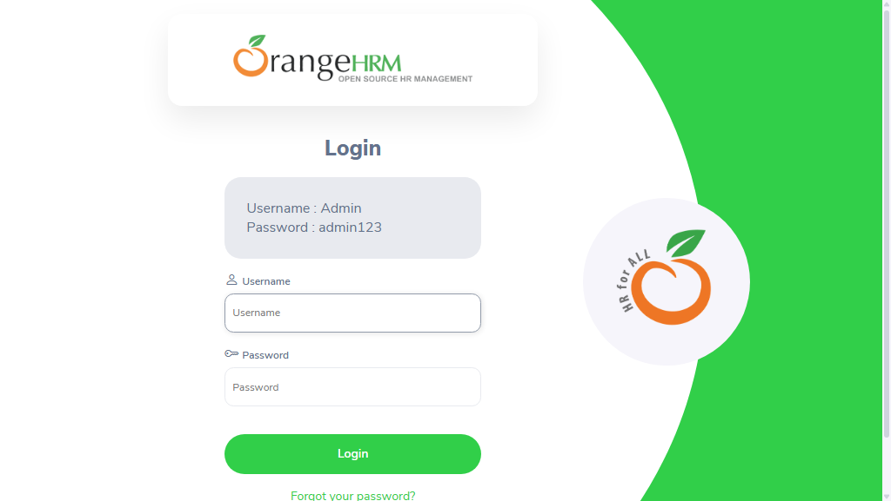

-
sampleTest3_user1_18-41-48
6:41:48 PM / 00:00:13:268 Fail
sampleTest3_user1_18-41-48
08.24.2026 6:41:48 PM 08.24.2026 6:42:02 PM 00:00:13:268 · #test-id=1Status Timestamp Details Skip 6:42:02 PM Test Skipped Fail 6:42:02 PM -
sampleTest2_user1_18-41-48
6:41:48 PM / 00:00:13:268 Fail
sampleTest2_user1_18-41-48
08.24.2026 6:41:48 PM 08.24.2026 6:42:02 PM 00:00:13:268 · #test-id=2Status Timestamp Details Skip 6:42:02 PM Test Skipped Fail 6:42:02 PM -
sampleTest1_user1_18-41-48
6:41:48 PM / 00:00:13:628 Fail
sampleTest1_user1_18-41-48
08.24.2026 6:41:48 PM 08.24.2026 6:42:02 PM 00:00:13:628 · #test-id=3Status Timestamp Details Skip 6:42:02 PM Test Skipped Fail 6:42:02 PM Info 6:42:02 PM 📂 Logs: Info 6:42:02 PM 📄 sampleTest1_user1_18-41-48.log -
sampleTest_user1_18-41-48
6:41:48 PM / 00:00:13:167 Fail
sampleTest_user1_18-41-48
08.24.2026 6:41:48 PM 08.24.2026 6:42:01 PM 00:00:13:167 · #test-id=4Status Timestamp Details Skip 6:42:01 PM Test Skipped Fail 6:42:01 PM Info 6:42:01 PM 📂 Logs: Info 6:42:01 PM 📄 sampleTest_user1_18-41-48.log -
sampleTest_user1_18-42-04
6:42:04 PM / 00:00:16:142 Fail
sampleTest_user1_18-42-04
08.24.2026 6:42:04 PM 08.24.2026 6:42:20 PM 00:00:16:142 · #test-id=5Status Timestamp Details Skip 6:42:20 PM Test Skipped Fail 6:42:20 PM Info 6:42:20 PM 📂 Logs: Info 6:42:20 PM 📄 sampleTest_user1_18-42-04.log -
sampleTest2_user1_18-42-04
6:42:04 PM / 00:00:16:150 Fail
sampleTest2_user1_18-42-04
08.24.2026 6:42:04 PM 08.24.2026 6:42:20 PM 00:00:16:150 · #test-id=6Status Timestamp Details Skip 6:42:20 PM Test Skipped Fail 6:42:20 PM -
sampleTest3_user1_18-42-04
6:42:04 PM / 00:00:15:612 Fail
sampleTest3_user1_18-42-04
08.24.2026 6:42:04 PM 08.24.2026 6:42:20 PM 00:00:15:612 · #test-id=7Status Timestamp Details Skip 6:42:20 PM Test Skipped Fail 6:42:20 PM -
sampleTest1_user1_18-42-06
6:42:06 PM / 00:00:13:532 Fail
sampleTest1_user1_18-42-06
08.24.2026 6:42:06 PM 08.24.2026 6:42:20 PM 00:00:13:532 · #test-id=8Status Timestamp Details Skip 6:42:20 PM Test Skipped Fail 6:42:20 PM Info 6:42:20 PM 📂 Logs: Info 6:42:20 PM 📄 sampleTest1_user1_18-42-06.log -
sampleTest1_user1_18-42-23
6:42:23 PM / 00:00:16:461 Fail
sampleTest1_user1_18-42-23
08.24.2026 6:42:23 PM 08.24.2026 6:42:39 PM 00:00:16:461 · #test-id=9Status Timestamp Details Fail 6:42:39 PM Info 6:42:39 PM 📂 Logs: Info 6:42:39 PM 📄 sampleTest1_user1_18-42-23.log -
sampleTest3_user1_18-42-23
6:42:23 PM / 00:00:16:517 Fail
sampleTest3_user1_18-42-23
08.24.2026 6:42:23 PM 08.24.2026 6:42:39 PM 00:00:16:517 · #test-id=10Status Timestamp Details Fail 6:42:39 PM -
sampleTest_user1_18-42-23
6:42:23 PM / 00:00:16:421 Fail
sampleTest_user1_18-42-23
08.24.2026 6:42:23 PM 08.24.2026 6:42:39 PM 00:00:16:421 · #test-id=11Status Timestamp Details Fail 6:42:39 PM Info 6:42:39 PM 📂 Logs: Info 6:42:39 PM 📄 sampleTest_user1_18-42-23.log -
sampleTest2_user1_18-42-25
6:42:25 PM / 00:00:14:415 Fail
sampleTest2_user1_18-42-25
08.24.2026 6:42:25 PM 08.24.2026 6:42:39 PM 00:00:14:415 · #test-id=12Status Timestamp Details Fail 6:42:39 PM -
sampleTest3_user2_18-42-42
6:42:42 PM / 00:00:15:865 Fail
sampleTest3_user2_18-42-42
08.24.2026 6:42:42 PM 08.24.2026 6:42:58 PM 00:00:15:865 · #test-id=13Status Timestamp Details Skip 6:42:58 PM Test Skipped Fail 6:42:58 PM -
sampleTest1_user2_18-42-42
6:42:42 PM / 00:00:15:856 Fail
sampleTest1_user2_18-42-42
08.24.2026 6:42:42 PM 08.24.2026 6:42:58 PM 00:00:15:856 · #test-id=14Status Timestamp Details Skip 6:42:58 PM Test Skipped Fail 6:42:58 PM Info 6:42:58 PM 📂 Logs: Info 6:42:58 PM 📄 sampleTest1_user2_18-42-42.log -
sampleTest_user2_18-42-42
6:42:42 PM / 00:00:15:815 Fail
sampleTest_user2_18-42-42
08.24.2026 6:42:42 PM 08.24.2026 6:42:58 PM 00:00:15:815 · #test-id=15Status Timestamp Details Skip 6:42:58 PM Test Skipped Fail 6:42:58 PM Info 6:42:58 PM 📂 Logs: Info 6:42:58 PM 📄 sampleTest_user2_18-42-42.log -
sampleTest2_user2_18-42-42
6:42:42 PM / 00:00:15:306 Fail
sampleTest2_user2_18-42-42
08.24.2026 6:42:42 PM 08.24.2026 6:42:58 PM 00:00:15:306 · #test-id=16Status Timestamp Details Skip 6:42:58 PM Test Skipped Fail 6:42:58 PM -
sampleTest1_user2_18-43-00
6:43:01 PM / 00:00:15:848 Fail
sampleTest1_user2_18-43-00
08.24.2026 6:43:01 PM 08.24.2026 6:43:16 PM 00:00:15:848 · #test-id=17Status Timestamp Details Skip 6:43:16 PM Test Skipped Fail 6:43:16 PM Info 6:43:16 PM 📂 Logs: Info 6:43:16 PM 📄 sampleTest1_user2_18-43-00.log -
sampleTest_user2_18-43-01
6:43:01 PM / 00:00:15:643 Fail
sampleTest_user2_18-43-01
08.24.2026 6:43:01 PM 08.24.2026 6:43:16 PM 00:00:15:643 · #test-id=18Status Timestamp Details Skip 6:43:16 PM Test Skipped Fail 6:43:16 PM Info 6:43:16 PM 📂 Logs: Info 6:43:16 PM 📄 sampleTest_user2_18-43-01.log -
sampleTest2_user2_18-43-01
6:43:01 PM / 00:00:15:826 Fail
sampleTest2_user2_18-43-01
08.24.2026 6:43:01 PM 08.24.2026 6:43:17 PM 00:00:15:826 · #test-id=19Status Timestamp Details Skip 6:43:17 PM Test Skipped Fail 6:43:17 PM -
sampleTest3_user2_18-43-01
6:43:01 PM / 00:00:15:300 Fail
sampleTest3_user2_18-43-01
08.24.2026 6:43:01 PM 08.24.2026 6:43:16 PM 00:00:15:300 · #test-id=20Status Timestamp Details Skip 6:43:16 PM Test Skipped Fail 6:43:16 PM -
sampleTest1_user2_18-43-18
6:43:18 PM / 00:00:16:681 Fail
sampleTest1_user2_18-43-18
08.24.2026 6:43:18 PM 08.24.2026 6:43:35 PM 00:00:16:681 · #test-id=21Status Timestamp Details Fail 6:43:35 PM Info 6:43:35 PM 📂 Logs: Info 6:43:35 PM 📄 sampleTest1_user2_18-43-18.log -
sampleTest_user2_18-43-19
6:43:19 PM / 00:00:16:401 Fail
sampleTest_user2_18-43-19
08.24.2026 6:43:19 PM 08.24.2026 6:43:35 PM 00:00:16:401 · #test-id=22Status Timestamp Details Fail 6:43:35 PM Info 6:43:35 PM 📂 Logs: Info 6:43:35 PM 📄 sampleTest_user2_18-43-19.log -
sampleTest3_user2_18-43-19
6:43:19 PM / 00:00:16:224 Fail
sampleTest3_user2_18-43-19
08.24.2026 6:43:19 PM 08.24.2026 6:43:35 PM 00:00:16:224 · #test-id=23Status Timestamp Details Fail 6:43:35 PM -
sampleTest2_user2_18-43-22
6:43:22 PM / 00:00:13:139 Fail
sampleTest2_user2_18-43-22
08.24.2026 6:43:22 PM 08.24.2026 6:43:35 PM 00:00:13:139 · #test-id=24Status Timestamp Details Fail 6:43:35 PM -
sampleTest4_user1_18-43-37
6:43:37 PM / 00:00:16:260 Fail
sampleTest4_user1_18-43-37
08.24.2026 6:43:37 PM 08.24.2026 6:43:53 PM 00:00:16:260 · #test-id=25Status Timestamp Details Skip 6:43:53 PM Test Skipped Fail 6:43:53 PM -
sampleTest5_user1_18-43-38
6:43:38 PM / 00:00:15:945 Fail
sampleTest5_user1_18-43-38
08.24.2026 6:43:38 PM 08.24.2026 6:43:54 PM 00:00:15:945 · #test-id=26Status Timestamp Details Skip 6:43:54 PM Test Skipped Fail 6:43:54 PM -
verifyLoginTest1_user1_18-43-38
6:43:38 PM / 00:00:15:680 Fail
verifyLoginTest1_user1_18-43-38
08.24.2026 6:43:38 PM 08.24.2026 6:43:54 PM 00:00:15:680 · #test-id=27Status Timestamp Details Skip 6:43:54 PM Test Skipped Fail 6:43:54 PM Info 6:43:54 PM 📸 Screenshots: Info 6:43:54 PM 
-
verifyLoginTest_{COL1=ONE}_18-43-40
6:43:40 PM / 00:00:13:824 Fail
verifyLoginTest_{COL1=ONE}_18-43-40
08.24.2026 6:43:40 PM 08.24.2026 6:43:54 PM 00:00:13:824 · #test-id=28Status Timestamp Details Skip 6:43:54 PM Test Skipped Fail 6:43:54 PM Info 6:43:54 PM 📂 Logs: Info 6:43:54 PM 📄 verifyLoginTest_{COL1=ONE}_18-43-40.log Info 6:43:54 PM 📸 Screenshots: Info 6:43:54 PM 
-
sampleTest4_user1_18-43-54
6:43:54 PM / 00:00:17:376 Fail
sampleTest4_user1_18-43-54
08.24.2026 6:43:54 PM 08.24.2026 6:44:12 PM 00:00:17:376 · #test-id=29Status Timestamp Details Skip 6:44:12 PM Test Skipped Fail 6:44:12 PM -
sampleTest5_user1_18-43-56
6:43:56 PM / 00:00:15:292 Fail
sampleTest5_user1_18-43-56
08.24.2026 6:43:56 PM 08.24.2026 6:44:12 PM 00:00:15:292 · #test-id=30Status Timestamp Details Skip 6:44:12 PM Test Skipped Fail 6:44:12 PM -
verifyLoginTest1_user1_18-43-57
6:43:57 PM / 00:00:15:679 Fail
verifyLoginTest1_user1_18-43-57
08.24.2026 6:43:57 PM 08.24.2026 6:44:12 PM 00:00:15:679 · #test-id=31Status Timestamp Details Skip 6:44:12 PM Test Skipped Fail 6:44:12 PM Info 6:44:12 PM 📸 Screenshots: Info 6:44:12 PM 
-
verifyLoginTest_{COL1=ONE}_18-43-58
6:43:58 PM / 00:00:14:157 Fail
verifyLoginTest_{COL1=ONE}_18-43-58
08.24.2026 6:43:58 PM 08.24.2026 6:44:12 PM 00:00:14:157 · #test-id=32Status Timestamp Details Skip 6:44:12 PM Test Skipped Fail 6:44:12 PM Info 6:44:12 PM 📂 Logs: Info 6:44:12 PM 📄 verifyLoginTest_{COL1=ONE}_18-43-58.log Info 6:44:12 PM 📸 Screenshots: Info 6:44:12 PM 
-
sampleTest5_user1_18-44-13
6:44:13 PM / 00:00:16:242 Fail
sampleTest5_user1_18-44-13
08.24.2026 6:44:13 PM 08.24.2026 6:44:30 PM 00:00:16:242 · #test-id=34Status Timestamp Details Fail 6:44:30 PM -
sampleTest4_user1_18-44-13
6:44:13 PM / 00:00:16:242 Fail
sampleTest4_user1_18-44-13
08.24.2026 6:44:13 PM 08.24.2026 6:44:30 PM 00:00:16:242 · #test-id=33Status Timestamp Details Fail 6:44:30 PM -
verifyLoginTest1_user1_18-44-15
6:44:15 PM / 00:00:16:130 Fail
verifyLoginTest1_user1_18-44-15
08.24.2026 6:44:15 PM 08.24.2026 6:44:32 PM 00:00:16:130 · #test-id=35Status Timestamp Details Fail 6:44:32 PM Info 6:44:32 PM 📸 Screenshots: Info 6:44:32 PM 
-
verifyLoginTest_{COL1=ONE}_18-44-16
6:44:16 PM / 00:00:13:713 Fail
verifyLoginTest_{COL1=ONE}_18-44-16
08.24.2026 6:44:16 PM 08.24.2026 6:44:30 PM 00:00:13:713 · #test-id=36Status Timestamp Details Fail 6:44:30 PM Info 6:44:30 PM 📂 Logs: Info 6:44:30 PM 📄 verifyLoginTest_{COL1=ONE}_18-44-16.log Info 6:44:30 PM 📸 Screenshots: Info 6:44:30 PM 
-
sampleTest4_user2_18-44-32
6:44:32 PM / 00:00:16:539 Fail
sampleTest4_user2_18-44-32
08.24.2026 6:44:32 PM 08.24.2026 6:44:49 PM 00:00:16:539 · #test-id=37Status Timestamp Details Skip 6:44:49 PM Test Skipped Fail 6:44:49 PM -
sampleTest5_user2_18-44-32
6:44:32 PM / 00:00:16:456 Fail
sampleTest5_user2_18-44-32
08.24.2026 6:44:32 PM 08.24.2026 6:44:48 PM 00:00:16:456 · #test-id=38Status Timestamp Details Skip 6:44:48 PM Test Skipped Fail 6:44:48 PM -
verifyLoginTest_{COL1=ONEONE}_18-44-32
6:44:32 PM / 00:00:18:678 Fail
verifyLoginTest_{COL1=ONEONE}_18-44-32
08.24.2026 6:44:32 PM 08.24.2026 6:44:51 PM 00:00:18:678 · #test-id=39Status Timestamp Details Skip 6:44:51 PM Test Skipped Fail 6:44:51 PM Info 6:44:51 PM 📂 Logs: Info 6:44:51 PM 📄 verifyLoginTest_{COL1=ONEONE}_18-44-32.log Info 6:44:51 PM 📸 Screenshots: Info 6:44:51 PM 
-
verifyLoginTest1_user2_18-44-35
6:44:35 PM / 00:00:15:205 Fail
verifyLoginTest1_user2_18-44-35
08.24.2026 6:44:35 PM 08.24.2026 6:44:50 PM 00:00:15:205 · #test-id=40Status Timestamp Details Skip 6:44:50 PM Test Skipped Fail 6:44:50 PM Info 6:44:50 PM 📸 Screenshots: Info 6:44:50 PM -
sampleTest5_user2_18-44-50
6:44:50 PM / 00:00:17:245 Fail
sampleTest5_user2_18-44-50
08.24.2026 6:44:50 PM 08.24.2026 6:45:08 PM 00:00:17:245 · #test-id=41Status Timestamp Details Skip 6:45:08 PM Test Skipped Fail 6:45:08 PM -
sampleTest4_user2_18-44-51
6:44:51 PM / 00:00:16:969 Fail
sampleTest4_user2_18-44-51
08.24.2026 6:44:51 PM 08.24.2026 6:45:08 PM 00:00:16:969 · #test-id=42Status Timestamp Details Skip 6:45:08 PM Test Skipped Fail 6:45:08 PM -
verifyLoginTest1_user2_18-44-53
6:44:53 PM / 00:00:15:184 Fail
verifyLoginTest1_user2_18-44-53
08.24.2026 6:44:53 PM 08.24.2026 6:45:08 PM 00:00:15:184 · #test-id=43Status Timestamp Details Skip 6:45:08 PM Test Skipped Fail 6:45:08 PM Info 6:45:08 PM 📸 Screenshots: Info 6:45:08 PM 
-
verifyLoginTest_{COL1=ONEONE}_18-44-54
6:44:54 PM / 00:00:14:166 Fail
verifyLoginTest_{COL1=ONEONE}_18-44-54
08.24.2026 6:44:54 PM 08.24.2026 6:45:08 PM 00:00:14:166 · #test-id=44Status Timestamp Details Skip 6:45:08 PM Test Skipped Fail 6:45:08 PM Info 6:45:08 PM 📂 Logs: Info 6:45:08 PM 📄 verifyLoginTest_{COL1=ONEONE}_18-44-54.log Info 6:45:08 PM 📸 Screenshots: Info 6:45:08 PM 
-
verifyLoginTest1_user2_18-45-11
6:45:11 PM / 00:00:16:760 Fail
verifyLoginTest1_user2_18-45-11
08.24.2026 6:45:11 PM 08.24.2026 6:45:27 PM 00:00:16:760 · #test-id=45Status Timestamp Details Fail 6:45:27 PM Info 6:45:27 PM 📸 Screenshots: Info 6:45:27 PM 
-
sampleTest4_user2_18-45-11
6:45:11 PM / 00:00:15:204 Fail
sampleTest4_user2_18-45-11
08.24.2026 6:45:11 PM 08.24.2026 6:45:26 PM 00:00:15:204 · #test-id=46Status Timestamp Details Fail 6:45:26 PM -
sampleTest5_user2_18-45-11
6:45:11 PM / 00:00:14:778 Fail
sampleTest5_user2_18-45-11
08.24.2026 6:45:11 PM 08.24.2026 6:45:26 PM 00:00:14:778 · #test-id=47Status Timestamp Details Fail 6:45:26 PM -
verifyLoginTest_{COL1=ONEONE}_18-45-11
6:45:11 PM / 00:00:13:585 Fail
verifyLoginTest_{COL1=ONEONE}_18-45-11
08.24.2026 6:45:11 PM 08.24.2026 6:45:24 PM 00:00:13:585 · #test-id=48Status Timestamp Details Fail 6:45:24 PM Info 6:45:24 PM 📂 Logs: Info 6:45:24 PM 📄 verifyLoginTest_{COL1=ONEONE}_18-45-11.log Info 6:45:24 PM 📸 Screenshots: Info 6:45:24 PM 
-
verifyLoginTest2_user1_18-45-27
6:45:27 PM / 00:00:12:939 Fail
verifyLoginTest2_user1_18-45-27
08.24.2026 6:45:27 PM 08.24.2026 6:45:40 PM 00:00:12:939 · #test-id=49Status Timestamp Details Skip 6:45:40 PM Test Skipped Fail 6:45:40 PM Info 6:45:40 PM 📂 Logs: Info 6:45:40 PM 📄 verifyLoginTest2_user1_18-45-27.log -
verifyLoginTest2_user1_18-45-41
6:45:41 PM / 00:00:12:938 Fail
verifyLoginTest2_user1_18-45-41
08.24.2026 6:45:41 PM 08.24.2026 6:45:54 PM 00:00:12:938 · #test-id=50Status Timestamp Details Skip 6:45:54 PM Test Skipped Fail 6:45:54 PM Info 6:45:54 PM 📂 Logs: Info 6:45:54 PM 📄 verifyLoginTest2_user1_18-45-41.log -
verifyLoginTest2_user1_18-45-55
6:45:55 PM / 00:00:12:991 Fail
verifyLoginTest2_user1_18-45-55
08.24.2026 6:45:55 PM 08.24.2026 6:46:08 PM 00:00:12:991 · #test-id=51Status Timestamp Details Fail 6:46:08 PM Info 6:46:08 PM 📂 Logs: Info 6:46:08 PM 📄 verifyLoginTest2_user1_18-45-55.log -
verifyLoginTest2_user2_18-46-09
6:46:09 PM / 00:00:12:746 Fail
verifyLoginTest2_user2_18-46-09
08.24.2026 6:46:09 PM 08.24.2026 6:46:22 PM 00:00:12:746 · #test-id=52Status Timestamp Details Skip 6:46:22 PM Test Skipped Fail 6:46:22 PM Info 6:46:22 PM 📂 Logs: Info 6:46:22 PM 📄 verifyLoginTest2_user2_18-46-09.log -
verifyLoginTest2_user2_18-46-23
6:46:23 PM / 00:00:12:680 Fail
verifyLoginTest2_user2_18-46-23
08.24.2026 6:46:23 PM 08.24.2026 6:46:35 PM 00:00:12:680 · #test-id=53Status Timestamp Details Skip 6:46:35 PM Test Skipped Fail 6:46:35 PM Info 6:46:35 PM 📂 Logs: Info 6:46:35 PM 📄 verifyLoginTest2_user2_18-46-23.log -
verifyLoginTest2_user2_18-46-38
6:46:38 PM / 00:00:12:796 Fail
verifyLoginTest2_user2_18-46-38
08.24.2026 6:46:38 PM 08.24.2026 6:46:51 PM 00:00:12:796 · #test-id=54Status Timestamp Details Fail 6:46:51 PM Info 6:46:51 PM 📂 Logs: Info 6:46:51 PM 📄 verifyLoginTest2_user2_18-46-38.log
-
org.openqa.selenium.TimeoutException
54 tests
org.openqa.selenium.TimeoutException
54 failed
Started
Aug 24, 2026 06:41:32 PM
Ended
Aug 24, 2026 06:46:52 PM
Tests Passed
0
Tests Failed
54
Tests
Log events
Timeline